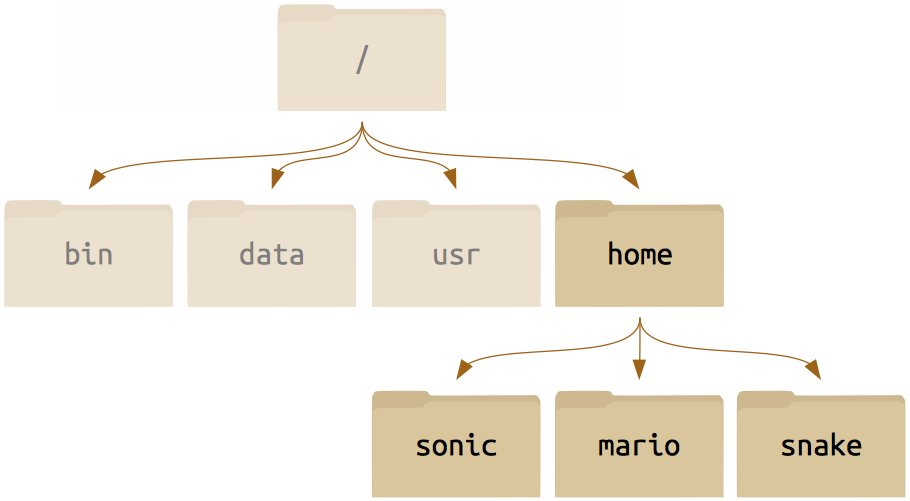
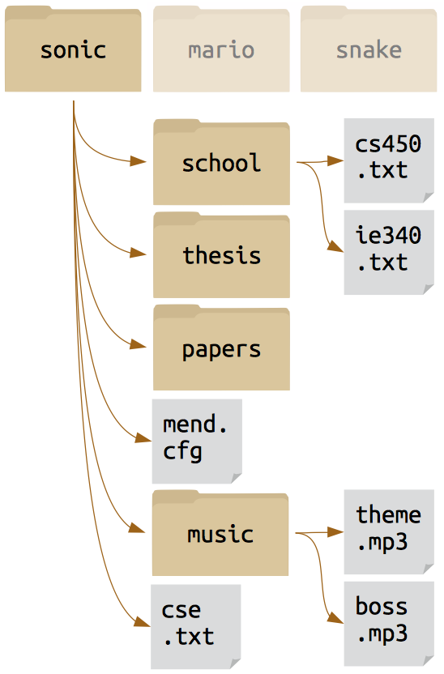

Introduction to Bash (The Linux Command Line)

Introduction
Objectives
- Explain how the shell relates to the keyboard, the screen, the operating system, and users' programs.
- Explain when and why command-line interfaces should be used instead of graphical interfaces.
Discussion
- A shell is a program whose primary purpose is to read commands and run other programs.
- The shell's main advantages are its high action-to-keystroke ratio, its support for automating repetitive tasks, and that it can be used to access networked machines.
- The shell's main disadvantages are its primarily textual nature and how cryptic its commands and operation can be.
Files & Directories
Objectives
- Explain the similarities and differences between a file and a directory.
- Translate an absolute path into a relative path and vice versa.
- Construct absolute and relative paths that identify specific files and directories.
- Explain the steps in the shell's read-run-print cycle.
- Identify the actual command, flags, and filenames in a command-line call.
- Demonstrate the use of tab completion, and explain its advantages.
Discussion
- The file system is responsible for managing information on the disk.
- Information is stored in files, which are stored in directories (folders).
- Directories can also store other directories, which forms a directory tree.
-
/ on its own is the root directory of the whole filesystem.
- A relative path specifies a location starting from the current location.
- An absolute path specifies a location from the root of the filesystem.
- Directory names in a path are separated with
/ on Unix, but \ on Windows.
-
.. means "the directory above the current one"; . on its own means "the current directory".
- Most files' names are
something.extension. The extension isn't required, and doesn't guarantee anything, but is normally used to indicate the type of data in the file.
- Most commands take options (flags) which begin with a
-.
Unix File System

- All of the directories are descended from the master root directory
/.
- Each of the top-level directories descend directly from the root
/. There are many other standard directories on Unix-derived systems: /usr, /bin, /opt, etc.)
Within any one of these folders we can identify a subsidiary structure:

And then we can drill down all the way to something that perhaps looks more familiar to you, a home directory populated with files just like you may treat the My Documents folder on Windows.

Create files and folders
Objectives
- Create a directory hierarchy that matches a given diagram.
- Create files in that hierarchy using an editor or by copying and renaming existing files.
- Display the contents of a directory using the command line.
- Delete specified files and/or directories.
Discussion
- Unix documentation uses
^A to mean "control-A".
- The shell does not have a trash bin: once something is deleted, it's really gone.
- Nano is a very simple text editor—please use something else for real work.
Pipes & filters
Objectives
- Redirect a command's output to a file.
- Process a file instead of keyboard input using redirection.
- Construct command pipelines with two or more stages.
- Explain what usually happens if a program or pipeline isn't given any input to process.
- Explain Unix's "small pieces, loosely joined" philosophy.
Discussion
-
command > file redirects a command's output to a file.
-
first | second is a pipeline: the output of the first command is used as the input to the second.
- The best way to use the shell is to use pipes to combine simple single-purpose programs (filters).
Loops
Objectives
- Write a loop that applies one or more commands separately to each file in a set of files.
- Trace the values taken on by a loop variable during execution of the loop.
- Explain the difference between a variable's name and its value.
- Explain why spaces and some punctuation characters shouldn't be used in files' names.
- Demonstrate how to see what commands have recently been executed.
- Re-run recently executed commands without retyping them.
Discussion
- A
for loop repeats commands once for every thing in a list.
- Every
for loop needs a variable to refer to the current "thing".
- Use
$name to expand a variable (i.e., get its value).
- Do not use spaces, quotes, or wildcard characters such as
* or ? in filenames, as it complicates variable expansion.
- Give files consistent names that are easy to match with wildcard patterns to make it easy to select them for looping.
- Use the up-arrow key to scroll up through previous commands to edit and repeat them.
- Use
history to display recent commands, and !number to repeat a command by number.
Shell Scripts
Objectives
- Write a shell script that runs a command or series of commands for a fixed set of files.
- Run a shell script from the command line.
- Write a shell script that operates on a set of files defined by the user on the command line.
- Create pipelines that include user-written shell scripts.
Discussion
- Save commands in files (usually called shell scripts) for re-use.
-
bash filename runs the commands saved in a file.
-
$* refers to all of a shell script's command-line parameters.
-
$1, $2, etc., refer to specified command-line parameters.
- Letting users decide what files to process is more flexible and more consistent with built-in Unix commands.
Finding Things
Objectives
- Use
grep to select lines from text files that match simple patterns.
- Use
find to find files whose names match simple patterns.
- Use the output of one command as the command-line parameters to another command.
- Explain what is meant by "text" and "binary" files, and why many common tools don't handle the latter well.
Discussion
- Use find to find files and directories, and grep to find text patterns in files.
-
$(command) inserts a command's output in place.
- man command displays the manual page for a given command.
Congratulations! Now you are a Linux-guru*!
* :)